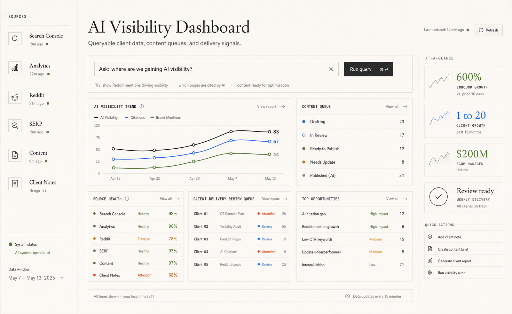

Content queue
Topics, outlines, draft status, review notes, publishing handoff, and refresh candidates.
A working surface that makes client data accessible and queryable across AI visibility, content queues, Search Console movement, Reddit opportunities, review work, and reporting.
The point is service quality: search, AI visibility, content, community, analytics, and client notes become one queryable surface with review queues people can act on.

Topics, outlines, draft status, review notes, publishing handoff, and refresh candidates.
Tracked answer-engine presence and source-safe reporting around AI traffic and discoverability.
Query movement, page opportunities, decay signals, and content updates worth prioritizing.
High-intent threads, scored messages, draft responses, and human approval before posting.
Research, brand rules, drafts, review, handoff, and measurement in one production path.
AI speeds up research and drafting. Human review protects quality, source use, and brand fit.
Collect topic surfaces, questions, competitors, search intent, and missing coverage.
Group opportunities around service, problem, local, and comparison demand.
Search existing content and brand rules before adding another page.
Build a structure that answers the query and gives the writer a usable plan.
Write, check claims, check source fit, review tone, and flag weak sections.
Move to Drive or CMS, then track search and answer-engine visibility.
Public examples show the output; private reports stay source-safe.

Search-led site structure, local pages, ranking proof, and AI visibility checks.
Reporting surface for Search Console, AI visibility, rankings, content queue, delivery review, and Reddit opportunities.
Example of structured prompting and review used when content needs matching imagery.